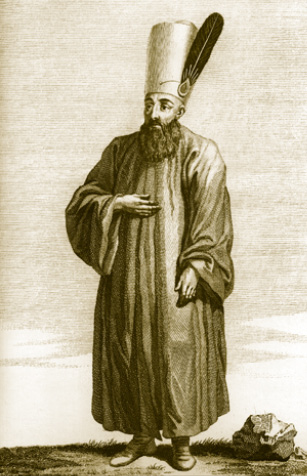
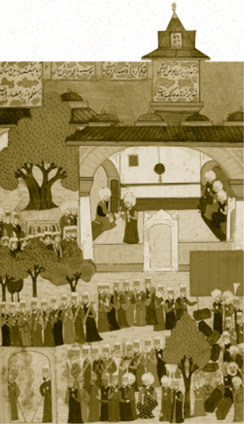
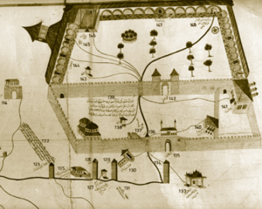

KUBBEALTI (DİVANHÂNE)
İkinci Avlu’nun kenarındaki Kubbealtı âdeta imparatorluğun cihanşümul karakterini temsil eder. Bir dönem dünyanın yönetildiği bu mütevazı mekân 16. yüzyılda Kanuni tarafından yaptırılmıştır. Üç kubbeden ibaret olan yapı, 1665 Saray Yangını neticesinde çok ciddi hasar görmüş; Sultan IV. Mehmed tarafından neredeyse yeniden yaptırılmıştır. Yapı daha sonraki dönemde de çeşitli tamirler görmüştür ve bu tamirlere dair kitabeler Kubbealtı’nın dış cephesinde bulunmaktadır.
Osmanlı Sarayı’nın 17. yüzyıldaki yangını çok önemlidir. Bu sebeple birçok ahşap yapılı yer mermere dönüştürülmüştür. Mesela birinci avluda hatta Enderun avlusundaki revaklarda bazı ahşap sütunlar vardı. Bunların yerini mermer almıştır. Haremin içinde de ahşapken bu yangın dolayısıyla taşa ve mermere dönüşen bölümler vardır. Topkapı Sarayı’nın geçirdiği en büyük mimari değişim de bu yangına dayanmaktadır.
Kubbealtı, geniş saçakları, zarif parmaklıkları ile Lale Devri’nden mimari izler taşır. Derin kubbesi ve geniş pencereleri ile sağlanan aydınlık ortamla divan üyelerine ferah bir çalışma ortamı sunar. Kubbe ve kemer süslemelerinde Kanuni devri klasik süsleme esasları görülür. Kubbe göbeği ise 17. yüzyılın klasik süslemelerini havidir.
Divit Odası, Kubbealtı’nın sadrazamlara mahsus kısımlarındandır. Divan’da görevli kâtiblerin başında reisülküttâb bulunur, ileride yetki ve görevleri aşırı derecede yükselecek olan reisülküttaba ait ikinci kubbe ile üçüncü kubbe arasında oluşturulmuş bölme vardır. Buraya “reisülküttab tahtası” adı verilir ki reisülküttaba bağlı divan kâtibleri burada oturmaktadır.
Üçüncü kubbenin altı ise Maliye Defterhânesi olup divanda tutulan defterdarlıkla ilgili kayıtların saklandığı bölümdü. Bu bölüm toplantı sonunda sadrazamda bulunan padişah mührüyle mühürlenirdi.
Kubbealtı’nın avluya bakan dış taraflarını geniş bir revak kuşatır. Yeşil porfir ve beyaz mermer on bir sütun üzerindeki kemerlere dayanan bu revak ahşap tavanlıdır ve enfes kalem işleri ile tezyin edilmiştir.
Divan Toplantıları
Divan-ı Hümâyûn, Osmanlılarda Orhan Bey zamanında teşekkül etmişti ve bütün devlet işlerinden de birinci derecede mesul kurumdu. Hükümdar nerede bulunursa divan orada kurulurdu.
Divan toplantılarına katılacak üyelerin Kubbealtı’nda oturacakları ve duracakları yerler teşrifat kaideleri gereği belirlidir. Sadrazam ve vezirler kapının karşısındaki sedire otururlardı. Kubbealtı vüzerası, devleti yöneten iç kabine mesabesindeki yüksek görevlilere denir. Cuma günleri burada temyiz görevleri yerine getirilirdi. Fatih’ten itibaren ise padişahlar divana riyaset görevini veziriazamlara bırakmışlardı. Sadrazam ve Kubbealtı vüzerasının oturduğu sedirin hemen üstünde padişahların divan toplantılarını takip ettikleri kafesli pencere Kasr-ı Adl bulunur. Kasr-ı Adl’e Adalet Kasrı’ndan girilir ve Harem’den ulaşılır.
Divan-ı Hümâyûn’un Özellikleri
Divan toplantıları Kasr-ı Adl’ın (Adalet Kasrı) altında Kubbealtı’nda yapılır. Divan-ı Hümâyûn tamamı ile Farsça bir tabirdir. Divan çok açık ki Sami asıllı bir deyim olup bir defteri ve dildeki dönüşümle bir büroyu ifade eder. Tercümesi imparatorluk kurulu diye de yapılabilir. Belirli işlere bakan bir meclis ve bakanlık demektir. Divan-ı Hümâyûn gerçek anlamda imparatorluğun yönetildiği bir kuruldur, bir bakanlar kurulu değildir. “Hümâyûn” İran’da emperyal anlamındadır. Hiçbir zaman Osmanlı kanunu onun yapısını ve görevini ayrıntılarıyla ve bükülmez bir şekilde tespit etmiş değildir; ama Osmanlı’da söze ve padişah fiiline dayanan anane o zamanki deyimle “ecdad ve eba-i izam” (yüce dedelerimiz ve babalarımız) zamanından beri uygulanagelmiştir. 16. yüzyılda haftada dört gün toplanan, 18. yüzyılda ise bir gün zor toplanan bir kurul hâline dönüşür. Güya tatil günü denen cumaları divanın en yoğun çalışma günüdür.
Divan-ı Hümâyûn’da savaşa ve barışa karar verilir. Tabii bu kararları tasdik edecek kişi padişahtır. Müftü de kararı berkitecek fetvayı verir.
Divanda dünyanın dört bir köşesini ve her şeyi ilgilendiren kararlar alınır. Divan-ı Hümâyûn 15. ve 16. Osmanlı asırları boyunca dünyanın yönetildiği bir yerdir.
Padişahlar Neden Divan’a Başkanlık Etmezler
Divan-ı Hümâyûn, devletin başlangıcından beri Osmanlı hükümdarlarının başkanlığında toplanan bir kuruldur. Rivayete göre, II. Mehmed’in Bursa veya Edirne zamanında, dervişin biri divanın ortasına sızıp “Padişah kangınız?” diye sormuş. Artık imparatorluk çağında böyle ölçüsü kaçmış aşiret demokrasisine tahammül edilemezdi; idare ve devlet, yönetilenle çok fazla yüz göz olmaya başlamıştır. Bu yüzden Fatih Sultan Mehmed devrinden itibaren padişahlar Divan-ı Hümâyûn’a yani dünyayı yöneten bu kurula başkanlıktan çekilmişler, toplantı salonu üzerinde kafesle ayrılan bir hücrede oturarak müzakereleri takip etmeye başlamışlardır.
Pek nadiren sesle, daha çok kafese asayla vurarak toplantıyı dağıttıkları vâkidir. Devlet yönetim toplantılarının bir hücreden takip edilmesi sadece Osmanlı’ya has bir uygulama değildir. İspanya kralları, üniversal şurayı; Moskova çarları, Kremlin’deki Boyarlar Meclisi’ni izleyebilmektedir. Divan’da alınan kararlar Mühimme Defterlerine yazılır. Başbakanlık arşivimiz bu kayıtları yani “Mühimme Defteri” denen eserleri neşretmektedir. 16. yüzyılın bir dünya imparatorluğunun tarihini buradan izlemek mümkündür.
Divan Öncesi
Divan-ı Hümâyûn toplantıları bütün İslâm dünyası için bir numaralı camii olan Ayasofya’da üyelerin sabah namazını kılmalarından sonra başlar. Zaten Osmanlılarda mesai başlangıcı her zaman sabah namazı sonrasıdır. Bedestenler, çarşılar da bu düzene göre açılır. Üyeler Vezir Yolu’ndan çavuşbaşı ve kapucular kethüdası refakatinde Divanhâne’ye (Kubbealtı) doğru yürürlerdi. Bâbü’s saade yakınlarına geldiklerinde ikinci vezir biraz daha ileri yürüyerek buradaki selam taşı önünde Bâbü’s saade’yi selamlar ve dönüp kendisini bekleyen vezirlerin arasına katılırdı.
Önceden Kubbealtı’na girmiş olan kazaskerler, defterdarlar, reisülküttâb ve Divan-ı Hümâyûn kâtibleri, ikinci kubbe ile üçüncü kubbe arasındaki Reisülküttâb Tahtası önünde ayakta karşılıklı saflar hâlinde sıralanarak vezirleri beklerlerdi. Vezirler gelince selam vererek hep birden Divanhâne’ye girerler, herkes Osmanlı teşrifat kaideleri lüzumunca makamının bulunduğu yere geçerek sadrazamın gelmesini beklerdi. Sadrazama divanın toplandığı haberi gelince sadrazam kethüdası ve maiyetiyle birlikte saraya gelirdi. Vezirler Divanhâne’de sadrazamın oturduğu sedirin sağ tarafına, kazaskerler ise sol tarafa sıralanır, kapının girişine doğru da defterdarlar otururdu. Nişancı, defterdarların karşısında yer alırdı. Görüşmelerin tutanaklarını tutan ve yazılacak belgeleri hazırlayan kâtibler kendilerine tahsis edilen Kubbealtı’nın bölmelerinde, alçak bir masanın etrafında yere otururlardı.

Divan Çavuşu
Müzakerelere başlanmadan evvel Ayasofya Camii’nden gelen imam veya müezzinler tarafından yüksek sesle Fetih Sûresi okunurdu. Çavuşbaşı ve tezkireciler Hazine ve Defterhâne’nin mühürlerini sökerek kullanılacak defterleri Divanhâne’ye getirirlerdi. Bu arada kendilerine yaz mevsiminde soğuk şerbet, kışın ise macun ikram edilirdi. Divanın başı vezir-i âzamdır; kendisini dört adet Kubbealtı veziri yani imparatorluk mareşalleri takip eder. Kubbealtı vezirlerinin sayısı ilerleyen dönemde farklılıklar göstermiştir. Yeniçeri ağası eğer vezir rütbesinde değilse divanda oturmazdı. Kaptanpaşa mutlaka bulunurdu. Asıl başköşede oturanlar Anadolu ve Rumeli kazaskerleriydi. Osmanlı yargı teşkilatı ve taşranın idaresi bu iki memura tâbi idi. Divanın bir üyesi defterdardı. Hiç şüphesiz bir diğer önemli üye nişancıydı. Askerî imparatorluğun tımar ve zeamet sistemi on binlerce tımarlı ve zaimin kayıt ve kaderi onun adaletli ve düzgün işlevlerine bakardı. Başyardımcısı reisülküttab ve ona bağlı divan tercümanları sefir süferanın görüşmeleri ve harici meseleler sorulduğunda arzda bulunmaları için divanda ayakta beklerlerdi.
Şeyhülislâm da divanın üyesi değildir. Yani başkent müftüsü, hiçbir zaman Divan-ı Hümâyûn’da bulunmamıştır. Müftünün kabineye dâhil olması Tanzimat’tan çok sonra gerçekleşmiş ve protokolde vezir-i âzamdan sonra şeyhülislâm gelmiştir. Ancak, klasik Osmanlı devirlerinde Divan-ı Hümâyûn’da şeyhülislâm bulunmamıştır.
Fenerli beyler imparatorluğun Hıristiyan memurlarıydı ve çok kimsenin zannettiği gibi mutlaka Helen asıllı değillerdi. İçlerinde mebzul Romen asıllılar, Bulgar, Hıristiyan Arnavut, İtalyan hatta 13. yüzyıldaki Haçlı istilasından kalan Latin kökenli aileler de vardı. Yunan ayaklanmasından sonra bu zümre tasfiye edildi. Yerlerini Ahmed Vefik Paşa’nın ailesi olan Bulgarzade Yahya gibi mühtedi Müslümanlar ve Sahak Ebro gibi Ermeniler aldı.
16. yüzyıl Osmanlı nişancıları, edip ve âlim kişilikleri ile dikkati çekmişlerdir. En büyüklerinden biri Koca Nişancı da denen Celalzade Mustafa idi. Celalzade Mustafa, edebî bir üslûba sahip tarih eseri “Tabakat-ül Memalik ve Deracat-ül Mesalik” ile tanınır. Onun kaleme aldığı nâme ve bazı fermanları okumak tarih öğrencilerine 16. yüzyıl dilinde ve edebiyatında ustalık kazandırır.
Divan-ı Hümâyûn Kararları
Muhteşem kubbenin gölgesinde sarayın orta avlusu, devletin ve milletin yaşadığı tarihin ihtişamını hâlâ aksettirmeye devam etmektedir. Üç ayda bir yeniçerilerin ulûfeleri dağıtıldığında Divan-ı Hümayun toplanır, orta avluda yeniçeri kalabalığının çektiği gülbank, yeri göğü inletirdi. Bu ortamda başkentteki sefirler de hazır bulunurdu. Bu üç aylık törenlere Galabe Divanı denir. Hiç şüphesiz ki, ne divanın ne padişahın otoritesinin kâle alındığı isyankâr, zoraki toplantılar da olurdu. Yeniçeriler orta avluyu doldurur, padişahı Ayak Divanı’na çağırırdı. Bunların çoğunun ne olduğunu, nasıl bittiğini biliyoruz; Hafız Paşa, Hezarpare (bin parça) Ahmed Paşa gibi bazı devlet adamlarının başı pahasına kalabalık dağıtılırdı.
Divandan çıkan kararların hukuken çok geçerli olduğu söylenemez; ama bu kararlar fiiliyatta geçerlidir. Çünkü vezir-i âzam mutlak bir vekildir. Onun başkanlığında toplanan bu kurulun toplanması da, müzakere usulleri de, dağılması da, toplantı günleri de uzun yüzyıllar içinde oluşmuş bir ananeyi aksettirir.

Kubbealtı’nda Fas elçisinin Divan-ı Hümayûn’a kabulü
Divan-ı Hümâyûn’un ikinci mercii, Bâbü’s saade’nin hemen girişinden sonra yer alan Arz Odası’dır. Arz günlerinde Kubbealtı’ndaki toplantı bitince vezirler burada belirli zamanlarda padişaha lâyiha sunarlar ve sadrazam da telhis sunar. Padişah onaylarsa kararlar kesinleşir ve uygulamaya geçilir. Arzı müteakip sadrazam Kubbealtı’na gelir, burada kendisini beklemekte olanlar eteğini öperler, bunu müteakip defterler mühürlenerek geldikleri dairelere geri yollanır ve herkes dağılır.
Sarayın Suyunu Dağıtan Dolap Ocağı
Bâbü’s selam’dan girince sağ tarafta şimdi saray atölyelerinin bulunduğu avluya açılan bir kapı vardır. Burada Dolap Ocağı bulunur. Bu mekânda saraya su sağlayan iki kuyu, merdivenli sarnıç ile büyük bir Dolap Ocağı vardır. Halkalı’dan gelen sular biri Fatih Sultan Mehmed Han diğeri Kanuni Sultan Süleyman Han tarafından yaptırılan bu kuyularda toplanır ve atların döndürdüğü dolaplar vasıtasıyla çekilen su, duvarlar üzerindeki haznelere çıkartılır; oradan da saraydaki çeşmelere, hamamlara, havuzlara dağıtılırdı. İlerleyen dönemde bu dolapların yerini makineler almıştır.
Namazgâh
Namazgâhlar sefer sırasında askerlerin namazlarını kılmaları için düşünülmüş umumiyetle açık mekânlardır. Bunlardan günümüze çok az bir kısmı ulaşmıştır. Sarayda da saltanat arabalarının sergilendiği mekânın karşısında 80 cm. kadar yükseklikte kıble taşı bulunan bölüm Namazgâh’tır. Kıble taşının üzerinde “Küllemâ dehale aleyhâ Zekeriyya’l-Mihrâb” ayet-i kerîmesi yazılıdır. Kapı personeli kışlar dışında namazlarını burada cemaat ile kılarlardı.
Saray mutfaklarının önünde bulunan uzun revakın altında sergilenen kitabelerin, alınlık taşlarının pek çoğu günümüzde bulunmayan İstanbul Surları’na, Sur-ı Sultani’ye, saray arazisi içinde önceden bulunan ancak günümüze ulaşamamış köşklere ve diğer çeşitli yapılara ait kitabelerdir.

Topkapı Sarayı’nın su isale hatlarını gösteren kroki